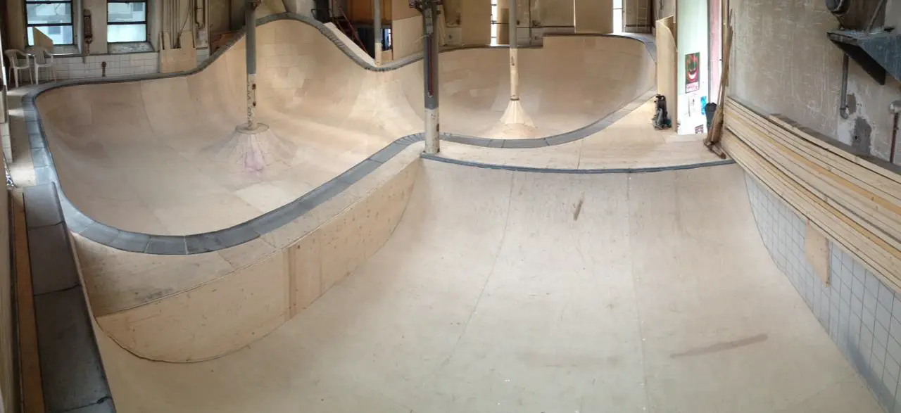
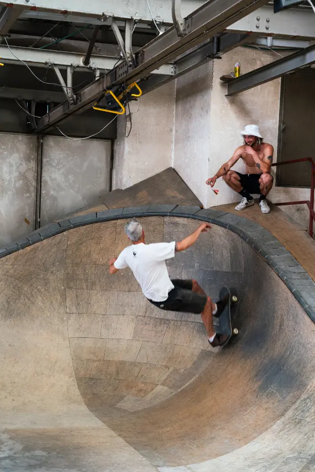

Planche 03 · Hommage historique
Le bowl
Le bowl de la Chaux-de-Fonds est définitivement fermé.
Depuis 2013, un bowl, sorte de bassin aux parois recourbées, a été érigé dans un local annexe de 180 m². Comme pour le skatepark, le design du bowl, ainsi que sa conception technique et sa construction, ont été assumés par les membres de l’association Park n’Sun.

= 75rem) 60rem, 100vw" width="1280" height="587" alt="Le bowl terminé, vu en panorama : un bassin en bois clair aux parois recourbées, bordé de margelles grises, avec deux niveaux de profondeur et des poteaux du local qui le traversent." />Vue 1 La construction du bowl est terminée.
Vue 2 · Maquette d’interprétation
Rouler dans le bowl
Faites défiler : la caméra suit une ligne de ride dans la courbe. La forme est une interprétation : deux niveaux de profondeur, des parois recourbées, une margelle, un poteau. Elle n’est pas à l’échelle. [À FOURNIR : dimensions ou photos du bowl pour la modélisation]
-
1 · Le local
Un local annexe de 180 m²
Le design est réfléchi spécifiquement pour ce local, un local annexe de 180 m² aux anciens abattoirs.
-
2 · Les mains
Conçu et construit par l’association
Réalisé bénévolement, mais avec une qualité professionnelle grâce au concours de menuisiers et serruriers membres et amis de l’association.
-
3 · La difficulté
Deux niveaux de profondeur
La construction est rendue complexe par la déclivité du sol, les formes arrondies, notamment autour des poteaux du local, le changement entre deux niveaux de profondeur et l’utilisation de margelles en béton en guise de bordure.
-
4 · Le temps
Près de 1500 heures de travail
Le bowl a nécessité près de 1500 heures de travail, réparties sur une année.
-
5 · La fin
Définitivement fermé
Le bowl a été démonté. [À FOURNIR : date exacte du démontage, ce que sont devenus les éléments du bowl]
Note · Financement
100’000 francs, 250’000 estimés
Dès l’origine du skatepark, ces travaux ont été effectués avec le soutien financier de la Ville de La Chaux-de-Fonds à travers le Parlement des Jeunes et le Service des Sports, de la Loterie romande, de la fondation Helvetia pour la Jeunesse et de plusieurs autres contributeurs privés. Ce sont ainsi près de 100’000 francs qui ont été obtenus et investis dans ces installations.
Confiée à des entreprises privées, la réalisation de telles infrastructures aurait représenté environ 250’000 francs, comme en témoignent les estimations faites par l’une d’entre elles.
Texte de la page « Le bowl » du site actuel.
Vues 3 à 5 · Le chantier
De la charpente à la courbe

Vue 3 Début de la construction du bowl.

Vue 4 Construction du bowl dans son ensemble.

Vue 5 Jam session de skateboard au bowl, StreetDay 2021. Photo : @SteveVisinand.
Vue 6 · Vidéo
Hommage au bowl
[À FOURNIR : vidéo de Léo]
Hommage au bowl, cadre 16:9
[À FOURNIR : photos et vidéos d’archives, témoignages, parties du bowl réellement réutilisées dans le park rénové]